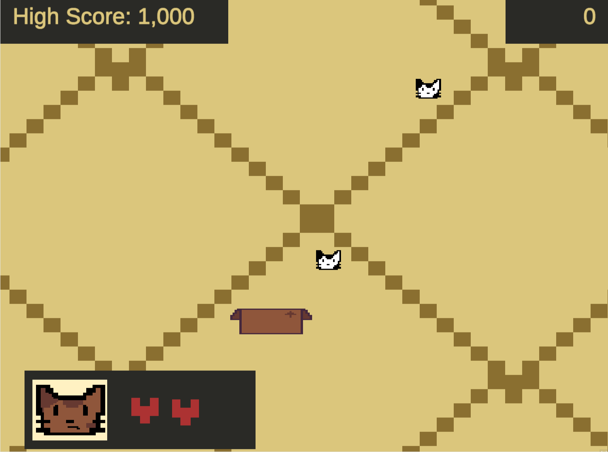
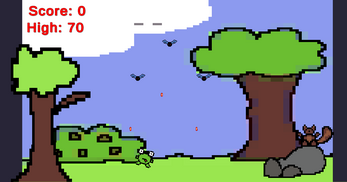
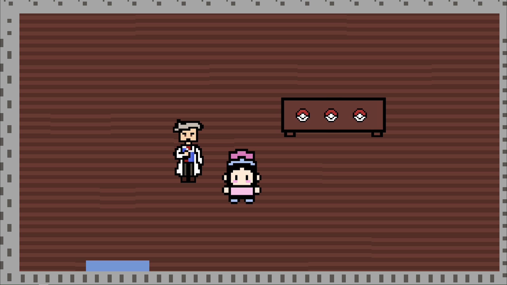
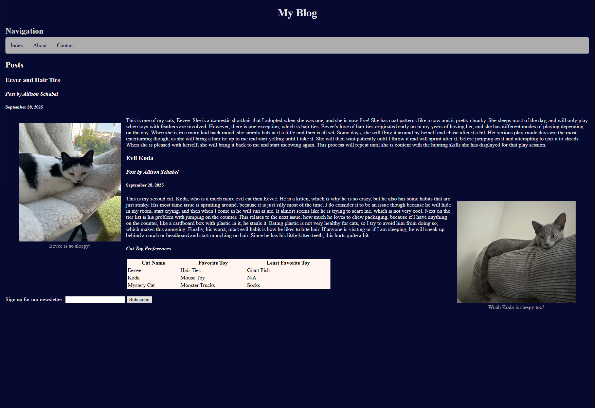
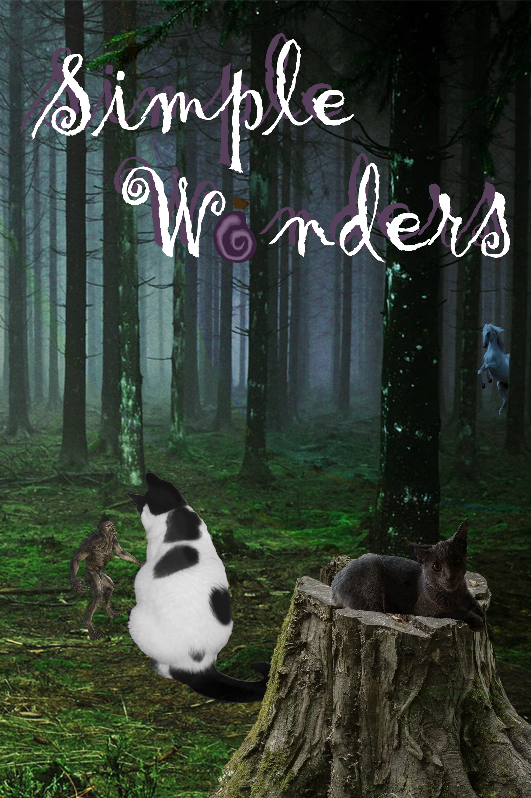

My Work
These are the different types of work I have completed in classes.
Games



From all these projects, I gained more knowledge and experience with C#, pixel art, and animations.
Websites

This project taught me how to use both HTML and JavaScript, allowing me to make the website you are using now! I also now have more experience with different applications like GitHub's software and its codespaces.
Graphic Design

Creating this piece gave me more experience with Photoshop, which frequently comes up in many classes for me now, and allows me to navigate the system efficiently and create interesting pieces.